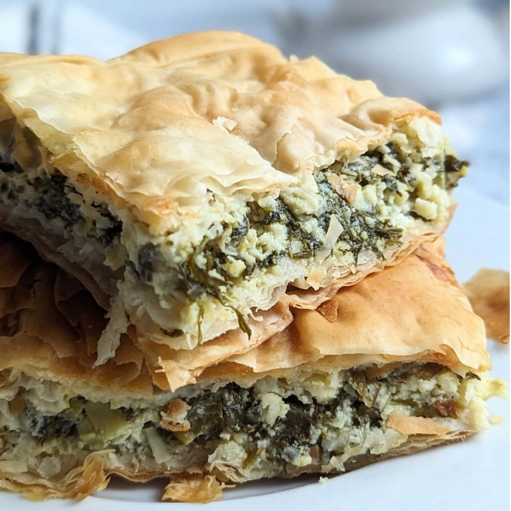
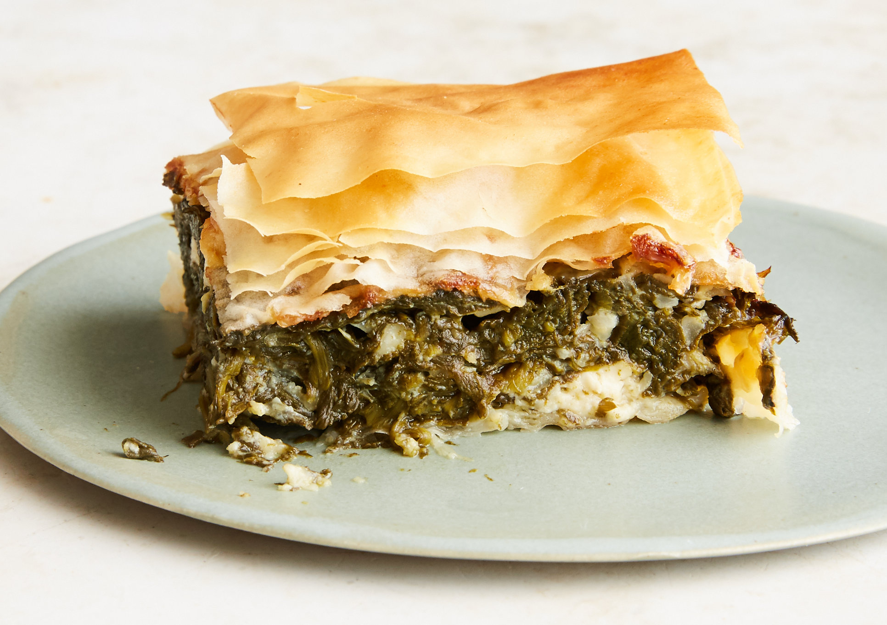

Spanakopita
A Delicious Greek Spinach Pie
Made by Teo Flores
History
Spanakopita has roots tracing back to Ancient Greece. It was believed to be invented during the Byzantine Empire and was originally called "spanakotyropita," a combination of "spanaki" (spinach) and "tyropita" (cheese pie). Over time, the name evolved into spanakopita, a beloved dish across Greek households.
Description
Spanakopita is a savory spinach pie with a perfect blend of spinach, phyllo dough, and feta cheese. It can be baked as a large pie or shaped into individual triangles. A true Greek classic!

Directions
- Preheat oven to 450°F (232°C).
- In a large bowl, combine chopped spinach, dill, scallions, ricotta, and feta. Mix well with your hands.
- Season with salt and pepper to taste.
- Mix in beaten eggs and about 1 cup of olive oil.
- Grease a half-sheet baking pan with oil.
- Lay 3 sheets of phyllo dough in the pan, brushing each layer with olive oil.
- Place 2 sheets of phyllo dough in the pan with half hanging over the sides.
- Spread the filling evenly inside the phyllo sheets. Fold the excess phyllo dough over the filling.
- Cover with 2 more layers of phyllo and drizzle olive oil on top.
- Scrunch remaining phyllo sheets on top, drizzle with the remaining olive oil for a crispy finish.
- Cut the pie into 12 equal slices with a sharp knife.
- Bake for 1 hour at 350°F (177°C), until golden and crispy.
- Allow to cool for 20 minutes before serving. Enjoy!

